ИИ. Новая
реальность
Занятие 1 из 8 · Карта: что это, как устроено
и с чего начать сегодня
Проверьте, что всё открывается

Wi-Fi зала
В нём уже есть VPN. Подключились, и ChatGPT открывается без настроек.
chatgpt.com
Вход через аккаунт Google. Окно чата на экране, можно с телефона.
Шпаргалка
Кнопка «Шпаргалка + библиотека» внизу. Откройте на телефоне второй вкладкой.
Альберт Валеев
Нейропросвещение: обучение и внедрение ИИ в компаниях.
Предприниматели, руководители, госслужащие. Пятый очный поток выпустился на прошлой неделе.
От первого ассистента сотрудника до агентов, которые ведут процессы.

Всё, что вы получали от меня в чате, писал мой агент
Приветствие, инструкция подготовки, конфиги VPN, напоминания сегодня утром. Я только сказал «ок».
Отвечает в Telegram
Читает чаты, ведёт календарь, шлёт напоминания и сводки.
Собирает материалы
Эта презентация и шпаргалка: собрал, проверил, выложил.
Строит и рисует
Картинки на этих слайдах, приложения, сайты, проверки.
У кого из вас было вот такое?
Поднимайте руку, я тоже буду поднимать.
Пробовал, разочаровался, закрыл
Он выдумывает и уверенно врёт
Некогда разбираться, и так работы полно
Попросил, а получил воду на три экрана
Это хайп, через год все забудут
Пользуюсь, но чувствую, что процентов на десять
Четыре угла, по которым идёт весь курс
Принципы
Как это устроено. То, что не меняется, когда выходит новая модель.
Сценарии
Что с ним делать. Готовые ходы под вашу рутину.
Смыслы
Зачем и почему в эту сторону. Думать вместе с ИИ.
Инструменты
Только в четвёртую очередь. Сегодня ChatGPT.
Инструменты каждый месяц новые. Гнаться за ними: голова лопнет.
Поймёте принципы, получите сценарии и смыслы, и любой новый инструмент разберёте за десять минут.
Каждое занятие проходит по этим четырём углам. В подвале каждого слайда написано, в каком углу мы сейчас.
Сценарии: что с ним делать
Готовые ходы, которые получите за восемь занятий. Каждый на ваших задачах, не на выдуманных.
Досье о себе
десять ответов на интервью → он знает вашу роль и подстраивается
Письмо и ответ на претензию
вводные и документ → текст с основаниями и вариантами
Сводка руководителю
три таблицы → одна таблица и пять выводов
КП под клиента
ваш прайс и запрос клиента → предложение под его задачу
Разбор договора
текст договора → риски по пунктам и правки
Совет экспертов
ваше решение → разбор с трёх позиций и чистовик
План-факт с сигналами
план и факт → отклонения и что делать сегодня
Контент-план на месяц
ваша ниша и цели → темы, форматы, тексты
Инструкция новому сотруднику
как вы делаете сами → пошаговый регламент
Дипресёрч рынка
вопрос → отчёт с источниками и цифрами
Ассистент под процесс
схема процесса → помощник, которого можно передать
Разбор встречи по записи
запись разговора → протокол, договорённости, задачи
Время, качество и позиция на рынке. Об этом третий блок сегодня: «Думать вместе с ИИ».
Инструменты: только в четвёртую очередь
ChatGPT
Основной инструмент курса. Всё, что делаем руками, делаем здесь.
Gemini и Qwen
То же окно. Gemini живёт внутри Google, Qwen работает без VPN.
NotebookLM и режим «Работа»
Своя база знаний, рутина по расписанию, плагины.
Агенты и Codex
Цель вместо задачи. Своё приложение и команда агентов.

Восемь занятий: что вы сможете после каждого
Вторник и четверг, 19:00–21:00, здесь же. Каждое занятие стоит на предыдущем.
Карта
ChatGPT настроен под вас: знает роль, задачи и сам предлагает, с чего начать
Промпт-инженерия
Формула и двенадцать приёмов: ответ с первого раза, а не с пятого
Ассистентный подход
Свой ассистент под процесс: вход, одна функция, выход, три теста
Режим «Работа»
Рутина по расписанию, плагины к почте и календарю, сводка утром
Визуал
Презентации, сайты, картинки и документы за минуты, а не за вечер
Поиск и аналитика
Дипресёрч: рынок, конкуренты и цены с источниками, а не по памяти
Агентный подход
Агент берёт цель и ведёт её до результата: ищет, считает, собирает
Агент-строитель
Codex: своё приложение и своя команда агентов. Финал и сертификаты
Как учимся: шесть договорённостей
Шпаргалка: ваш главный рабочий файл
Кнопка внизу экрана. Откройте на телефоне сейчас и держите второй вкладкой.
Я говорю «шаг 3»
Все промпты пронумерованы, искать ничего не нужно
Вы находите по номеру
И нажимаете «Копировать» под текстом
Вставляете в ChatGPT
Печатать руками не нужно. Ваше дело нажать и смотреть, что будет
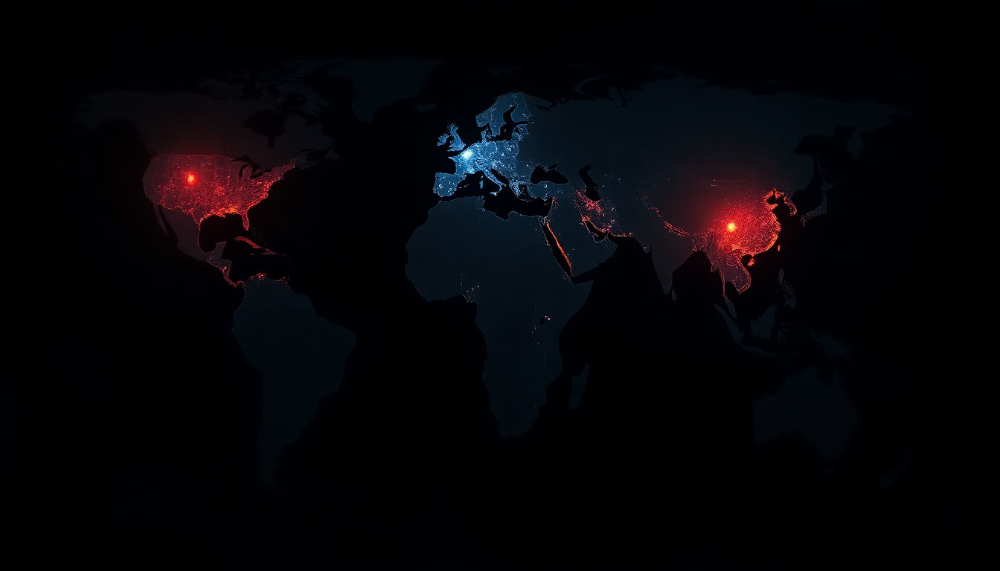
Цель не выучить всё.
Цель собрать своё
Два-три инструмента под свои задачи, которые работают на вас каждый день
Принципы:
как это устроено
Откроем чёрный ящик: откуда он всё знает, почему говорит по-человечески
и почему иногда уверенно врёт
Три мира нейросетей: Запад, Китай, Россия
Самые сильные и универсальные. Из России нужен VPN, зато лучший результат.
Догнали Запад за полтора года. Бесплатные, часть работает без VPN, хороши с файлами.
На шаг позади, зато без VPN, по-русски и с российскими законами в базе.
Платить или хватит бесплатного
| Что нужно | Бесплатно | Подписка Plus |
|---|---|---|
| Обычные вопросы, письма, тексты, разбор документа | ✓ | ✓ |
| Загрузить файл, фото, скан, таблицу | ✓ | ✓ |
| Голосом вместо набора текста | ✓ | ✓ |
| Рассказать о себе один раз, чтобы он помнил | ✓ | ✓ |
| Много запросов подряд и самые сильные модели | ○ | ✓ |
| Глубокое исследование на десятках источников | ○ | ✓ |
| Свои ассистенты, проекты и задачи по расписанию | ○ | ✓ |
Мой совет: первые два занятия спокойно на бесплатном. Подписка понадобится с третьего, к ассистентам и проектам.
Названий много, а окно у всех одно и то же
Форму чата выбрали не случайно: переписка знакома всем. Слева история, снизу строка ввода, скрепка и микрофон.
скрепка · микрофон
скрепка · микрофон
скрепка · микрофон
скрепка · микрофон
Как это работает вживую: текст, голос, камера, файлы
Нажали микрофон и говорите как есть. Он разберёт и оформит.
Навели телефон на договор, чек или доску после планёрки и спросили.
Таблица из 1С, скан акта, PDF на сорок страниц. Читает всё сразу.
Пять уровней работы с ИИ
Умный поисковик
Спросил, получил общий ответ. Почти все здесь.
почти все здесьРабочий инструмент
Ставите задачу так, что он делает с первого раза.
сегодняВторой пилот
Знает вас и вашу роль, проверяет за вами.
занятия 2–3Свои инструменты
Ассистенты под роль, которые можно передать сотруднику.
занятия 4–6Агенты
Ставите цель и уходите. Работа едет сама.
занятия 7–8Три слова, которыми все бросаются
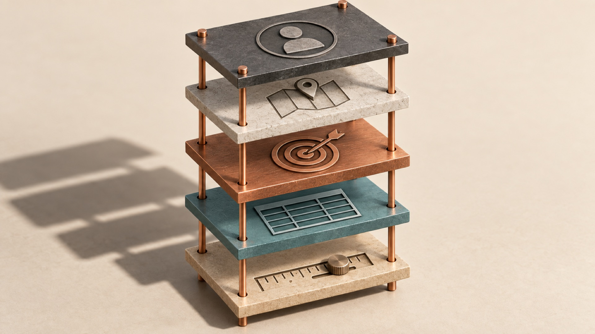
Искусственный интеллект
Сюда попадает всё: калькулятор, автопилот, распознавание номеров на парковке.
Нейросеть
Техническая схема. Распознаёт лица, считает людей на камере, подбирает ленту. Говорить не умеет.
Языковая модель
Нейросеть, обученная на языке. ChatGPT, Claude, DeepSeek, Алиса. Понимает текст и отвечает текстом.
GPT: что это вообще значит
Не ищет готовый ответ в базе, а создаёт новый текст с нуля, слово за словом.
Обучили один раз на гигантском объёме текста. Дальше он пользуется тем, что усвоил.
Схема из статьи Google 2017 года. Научила машину держать смысл длинного текста.
Четыре ступени: что модель умеет воспринимать
LLM
Большая языковая модель. Понимает и порождает текст. На этом стоит всё остальное.
VLM
Плюс зрение. Видит фото, скриншоты, сканы. Сфотографировали акт и спросили, что там.
Мультимодальная
Ещё звук, речь и видео. Слушает голосовое с планёрки, отвечает голосом.
Агент
Плюс руки. Не только понимает, но и действует: открывает сайты, файлы, программы.
Ассистентный подход и агентный
Ассистентный подход
- Вы спросили, он ответил
- Попросили найти, он нашёл
- Попросили составить, он составил
- Не понравилось, попросили переделать
- Всё через ваш запрос. Без вас он стоит
Агентный подход
- Вы ставите цель, а не задачу
- Он сам разбивает её на шаги
- Сам берёт инструменты, какие нужны
- Сам проверяет и переделывает
- Приносит готовый результат
Из чего состоит языковая модель
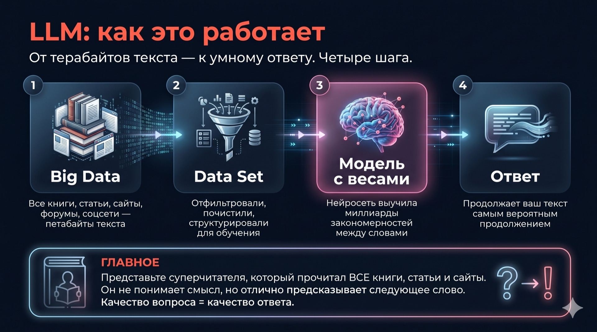
Четыре шага: собрали всё написанное, почистили, обучили модель, получили ответ. Дальше по каждому шагу.
Биг дата: на чём он вообще учился
Шаг первый, откуда берётся знание. Счёт идёт на петабайты текста.
Датасет и веса, по-человечески
Датасет
Сырой интернет в модель не заливают. Сначала чистят и раскладывают: убирают мусор, дубли, чушь, размечают, что есть что. Датасет это отобранный учебник. Каким его собрали, такой модель и получится.
Параметры и веса
Внутри модели сотни миллиардов маленьких ручек-настроек. Каждая отвечает за крошечную связь между понятиями. Обучение это подкрутка всех ручек, пока ответы не станут похожи на человеческие.
Почему он отвечает по-человечески
После обучения на текстах модель говорила технически правильно и совершенно нечеловечески.
Два варианта
Модель выдаёт два ответа на один вопрос
Человек выбирает
Живой человек отмечает, какой лучше
Миллионы раз
Тысячи людей, миллионы сравнений
Подстроилась
Модель повторяет то, что людям нравится
Стажёр с красным дипломом

Любая область, любой язык. Но ни дня не работал у вас.
Ни компании, ни клиентов, ни того, как вы любите получать результат.
Попросили «сделай хорошо», получили «хорошо» в его понимании.
Десять вариантов за минуту, правки принимает без обид, в три ночи тоже работает.
Он умеет уверенно ошибаться
Он подбирает правдоподобное продолжение. Если правдоподобно, но неправда, он всё равно это скажет тем же уверенным тоном.
Китайская комната
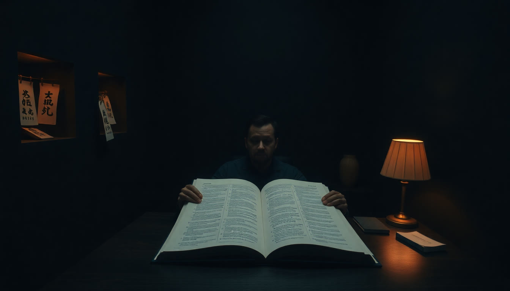
Кажется, что там сидит носитель китайского: шутит, отвечает по-человечески, считывает настроение.
Человек не знает ни слова. Просто сверяется с инструкцией и подбирает нужные символы.
Спор «интеллект ли это» идёт сорок лет и нас не касается. Инструкция работает, значит работаем.
Память ИИ: это стол, а не сейф
Закрыли чат, разложили новый стол. Новая задача, новый чат.
Досье о вас, инструкция качества. Это и сделаем сегодня руками.
В длинном чате начало теряется. Важное повторяйте или выносите в настройки.
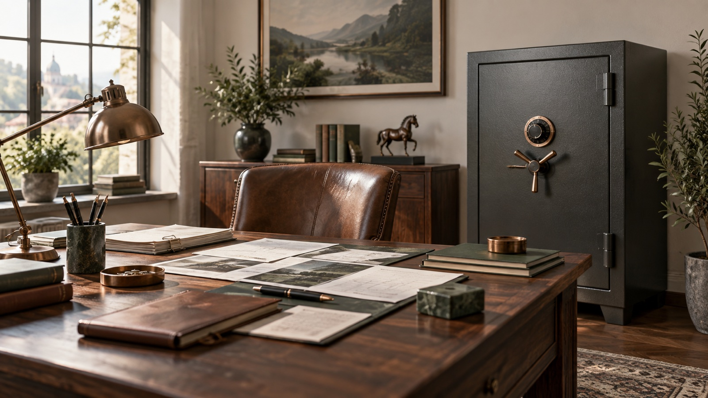
Как агент делает работу, по шагам
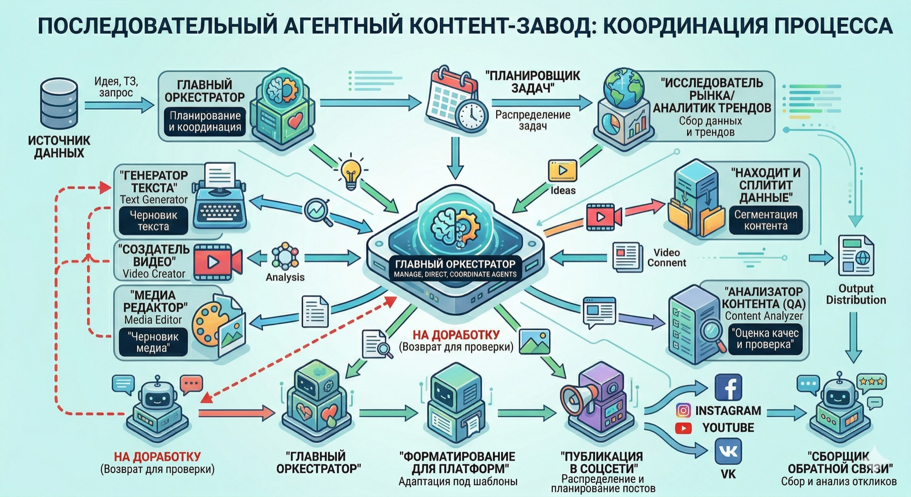
«Сравни три КП на ремонт, выбери лучшее и подготовь письмо поставщику с вопросами».
Открыл файлы, вытащил сроки, гарантию и цену. Проверил поставщиков в открытых источниках.
Сравнительная таблица, выбор с обоснованием, письмо. Перечитал сам, поправил.
Вы читаете готовое и решаете. Так работает контент-завод на картинке.
Модель в центре, вокруг неё руки
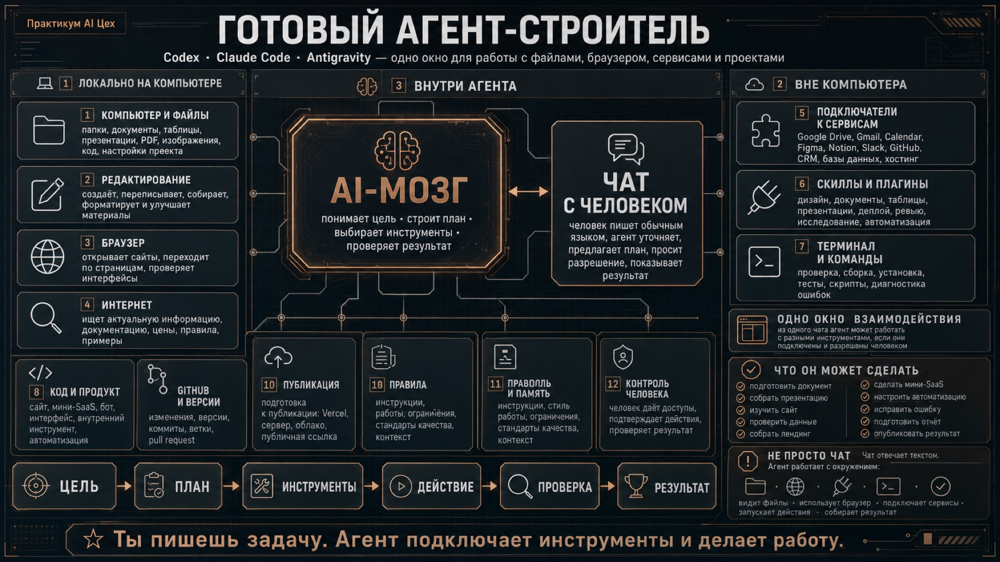
Та же языковая модель, что мы разобрали. Разница в обвязке: память, планировщик, файлы, браузер, сервисы и человек на контроле.
От эффективности к автономности
Ассистентный подход
Вы спрашиваете, он отвечает. Быстрее, чем без него, но каждое движение всё ещё ваше. Занятия 1–3 делают этот режим сильным: он знает вас, вы умеете ставить задачу.
Агентный подход
Вы ставите цель и уходите. Работа едет без вас и приходит готовой. Занятия 7–8: агент под вашу рутину и своё приложение в Codex.
Семь принципов, которые не меняются
Выйдет новая модель, поменяются кнопки. Это останется.
Сценарии:
что с ним делать
Человек открывает чат и не знает, куда его применить.
Сегодня уйдёте со списком под свою работу
Кто в зале
анкет из 21срез на день старта, остальные добавим по ходу
собственников и руководителейрешают сами, без согласований
работают с ИИ регулярно8 иногда, 3 пробовали пару раз, 1 ни разу
Что съедает ваше время
Планирование, тексты, таблицы и контент у большинства. Это и есть первые сценарии: их закроем на занятиях 1–3.
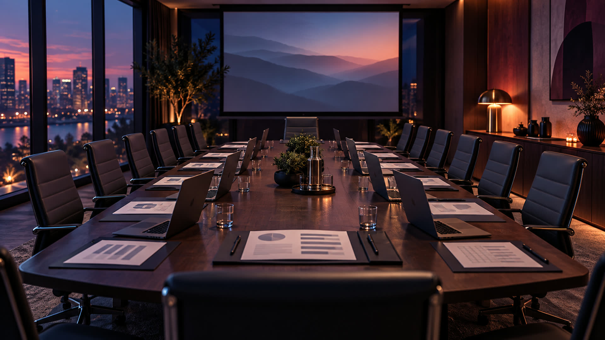
Карта задач по ролям зала
Из ваших анкет, без имён. Найдите свою строку.
Юристы
Заявления и претензии по шаблону → черновик с основаниями
Стройка и проектирование
Ответы на письма с ссылками на нормы, КП под объект
Общепит
Стратегия, стандарты для смен, разбор отзывов
Маркетинг и медиа
Контент, презентации, КП, сценарии роликов
Производство техники
План-факт в реальном времени, сигналы отклонений
Консалтинг
Разбор встреч по записи, задачи себе и клиенту
Печать и производство
Трекер заказа для клиента, контент для соцсетей
Авто из-за рубежа
Переписка с клиентами, продажи, подбор по запросу
Сообщества и мероприятия
Тексты, программы, письма участникам
Обучение и сервис
Контент для соцсетей, обучение новых сотрудников
Финансовый директор
Разбор почты и ежедневных сообщений
Директор по развитию
Планирование: голова, цифры и реальная жизнь в одном месте
Дома он пригодится не меньше, чем на работе
Двенадцать домашних сценариев лежат в шпаргалке. Пара примеров: меню на неделю из того, что есть в холодильнике; письмо в управляющую компанию без нервов; репетитор для ребёнка, который объясняет столько раз, сколько нужно; разбор договора аренды перед подписанием.
Домашние задачи это лучший тренажёр: результат виден сразу, ошибка ничего не стоит, а навык тот же, что на работе.
Здание ChatGPT: восемь этажей
Сегодня: он знает вас и понимает задачу с первого раза.
Помощник под процесс и папка под клиента с файлами и правилами.
Ваши приёмы одной кнопкой, почта и календарь подключены, сводка утром сама.
Свой калькулятор, сайт, дашборд. Агент, который правит файлы руками.
Смыслы:
зачем и почему в эту сторону
Что изменилось в мире, куда ведёт дорога
и почему главное здесь не кнопки, а мышление
Третья революция, и она больше первых двух

Один человек стал делать работу сотни. Силу можно было взять снаружи.

Библиотека размером с планету в кармане. Но прочитать и применить всё ещё надо самому.

Не знания, а способность их применять: разобраться, посчитать, составить, проверить.
Впервые в истории дефицит интеллекта закончился
Где взять того, кто умеет?
Умного специалиста надо было найти, нанять и дождаться. Аналитик, юрист, финансист, редактор: каждый отдельно, каждый дорого.
Умею ли я поставить задачу?
Все они в одном окне, круглосуточно, почти бесплатно. Узкое место переехало из «кого нанять» в «как сформулировать».
Три года. Три совершенно разных мира
Все поигрались с чат-ботом, удивились и вернулись к делам. ИИ равно забавная игрушка.
Тексты, таблицы, картинки, презентации. То, что большинство до сих пор считает потолком.
Агент ведёт задачу от начала до конца: ищет, считает, собирает, проверяет и сдаёт.
Куда ведёт эта дорога
Узкий ИИ: шахматы, навигатор, распознавание лиц. Работает только в своей клетке.
Универсальный помощник: понимает любую задачу, работает часами, действует сам.
Общий интеллект уровня лучшего специалиста в любой профессии. Прогнозы расходятся, но внутри десятилетия.
Сверхинтеллект. Умнее любого человека и всех вместе. Обсуждают, не обещают.
Три этапа компании с ИИ
Курс ведёт по первому этапу и показывает второй.
AI-native команда
Каждый сотрудник со своим ассистентом. Рутина уходит, качество растёт. Это наш курс.
AI-driven компания
Агенты ведут процессы, единый контур и база знаний. То, что мы строим с клиентами.
AI-first компания
Команда агентов и самоулучшение. Человек становится оператором. Горизонт, к которому идёт рынок.
Что ИИ не может никогда
Он предлагает варианты. Выбор и подпись всегда ваши.
Перед клиентом, судом и командой отвечает человек.
У него нет цели, вкуса и отношения к делу. Это ваш вклад, который не заменить.
Думать
вместе с ИИ
Когда общаешься с ним каждый день, начинаешь по-другому думать
и по-другому решать свои задачи
В каждом ответе лежит лучший метод мира

Учебники, судебную практику, методики консультантов, тысячи разборов таких же задач, как ваша.
Факты, обязательства, риски, варианты. Так думает сильный юрист, а не «сейчас напишу ответ».
Цель, ограничения, три сценария, критерии выбора. Структура, которой вас никто не учил.
Что убрать, что вынести вперёд, где нет мысли. Каждый раз бесплатный мастер-класс.
Вы просите письмо, а получаете метод
«Сейчас напишу ответ»
- Открыл претензию, разозлился
- Начал писать с первой строки
- Три раза переписал
- Отправил и сомневаюсь
Сначала структура, потом текст
- Какие факты есть, какие спорные
- Что мы обязаны, а что нет
- Три варианта ответа и риск каждого
- Текст под выбранный вариант
Появился третий класс навыков
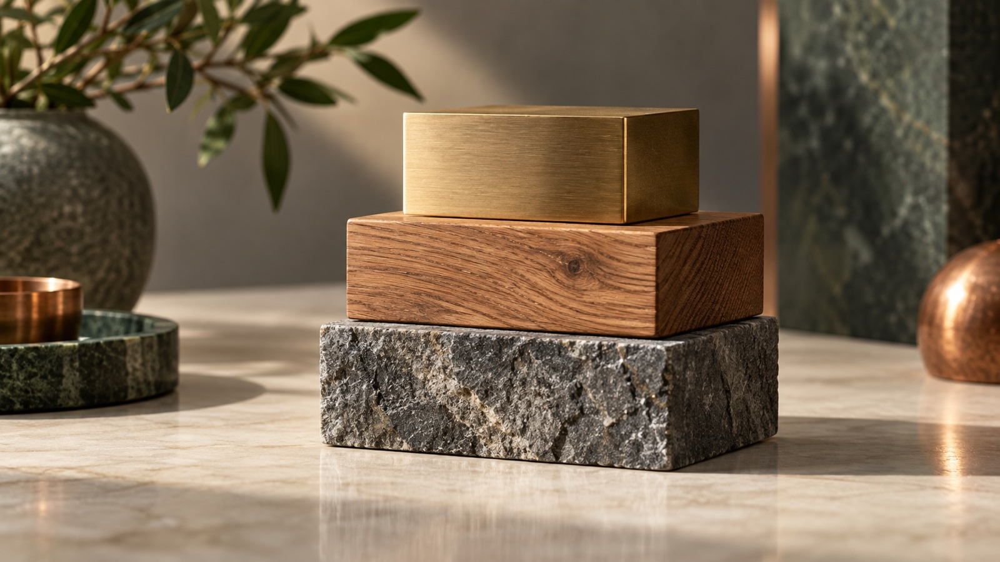
Ваша профессия: продажи, право, стройка, финансы. То, чему учат и что пишут в резюме.
Коммуникация, коллаборация, критическое мышление, креативность. Как вы работаете с людьми.
Как вы работаете с машиной. В резюме пока не пишут, на собеседовании уже спрашивают.
А мы от этого не поглупеем?
Погуглили, спросили коллег
- Долго, по кусочкам
- Двенадцать вкладок
- Получили процентов двадцать от возможного
- И этого хватало
Закинули и начали обстукивать
- Вопрос, ответ, уточнение, спор
- Можно голосом, по дороге
- За двадцать минут разобрались на сто
- И узнали, чего не знали, что не знаете
Надеть или лечь
Один и тот же инструмент. Две разные позиции.
Вы проверяете, спорите, докручиваете. Ваши компетенции растут, умноженные на машину.

Перекладывать всё, не проверяя и не думая. Отдаёте не глядя, перестаёте расти.
Рефлекс одного дня
Главная привычка курса. Не «изучить ИИ», а перестать решать, идти ли к нему.
Инструменты:
собираем личный контур
Через сорок минут ChatGPT знает вашу роль, ваши задачи
и сам говорит, чем вам полезен
Безопасность: светофор данных
Открытые источники, сайты компаний, ваши черновики, обезличенные примеры.
Переписка без имён, таблицы с «Клиент 1», договоры без реквизитов и сумм.
Паспорта и персональные данные, карты и счета, пароли, отчётность компании.
Правило одной фразой и правило одного круга
Инструмент любой. Данные только те, что не жалко увидеть в газете
Или обезличенные. Отвечает всегда тот, кто подписал результат, а не тот, кто его сгенерировал.
Между «ИИ написал» и «я отправил» ровно один круг
Прочитал глазами, докрутил одной фразой, проверил цифры, имена и нормы, отправил от себя. Он умеет уверенно ошибаться, вы это видели.
Мы покупаем технику и не читаем инструкцию
Телефон, машина, кофемашина. Инструкцию в сторону: там же всё интуитивно понятно. Через год выясняется, что пользуетесь процентами на десять от того, что оно умеет.
С нейросетью то же самое. Следующие сорок минут это и есть инструкция. Сегодня десять процентов, после практики шестьдесят.
Собираем ваш личный контур
Шаг 0 · Рабочее место ChatGPT: шесть кнопок, и всё
Вы: Возьми у меня интервью, чтобы понять мою работу…
ChatGPT: Вопрос 1 из 10. Чем занимается ваша компания? (что продаёте, кто клиенты)
Схема окна, не снимок экрана
Новая задача, новый чат. Интервью в одном, проверка в другом.
Файл, фото, скан, таблица.
Отвечайте на интервью голосом, так быстрее.
Навести на документ и спросить.
Сюда положим инструкцию и досье.
Шаг 1 · Инструкция качества
Он сам придумывает критерии качества и доводит ответ до них, прежде чем показать вам. Читать не нужно: скопировали из шпаргалки, вставили в «Настройки → Персонализация → Инструкции», сохранили.
Шаг 2 · Он сам возьмёт у вас интервью
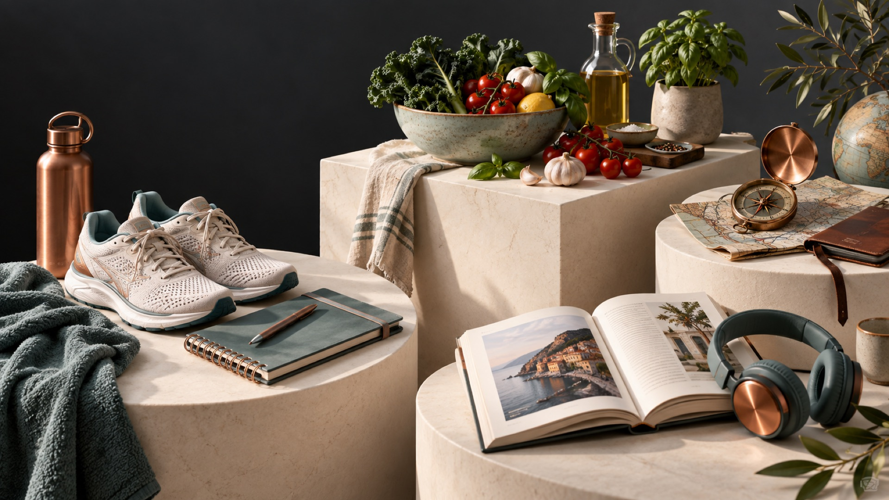
Отвечайте голосом, по одному вопросу. Получите досье до 1500 символов. Прочитайте и исправьте факты перед сохранением.
Шаг 3 · Кладём досье туда, где он его не забудет
Досье в чате живёт до конца чата. Досье в настройках живёт всегда: каждый новый чат он начинает уже с ним.
Скопировали блок
«=== РАБОЧЕЕ ДОСЬЕ ===» из ответа. Только текст, без заголовка.
Настройки → Персонализация
Аватар в правом верхнем углу. Включите «Что ещё стоит о вас знать».
Вставили и сохранили
В поле о себе. Рядом уже стоит инструкция качества из шага 1.
Шаг 4 · Проверяем, что он вас запомнил
Новый чат принципиально: в старом он помнит разговор, а нам надо проверить, что знание легло в память. Пересказал досье, значит всё встало.
Шаг 5 · Теперь ты знаешь меня: какие задачи решаем вместе
Вы увидите десять сценариев под свою роль и три, с которых легко начать прямо сейчас. Это ваш личный список задач на курс.
Шаг 6 · Берём задачу номер один и закрываем её своими словами
Из трёх задач, которые он предложил, берите самую верхнюю. Никаких формул: что за задача, для кого, в каком виде результат.
Последний ход: пусть он улучшит ваш запрос
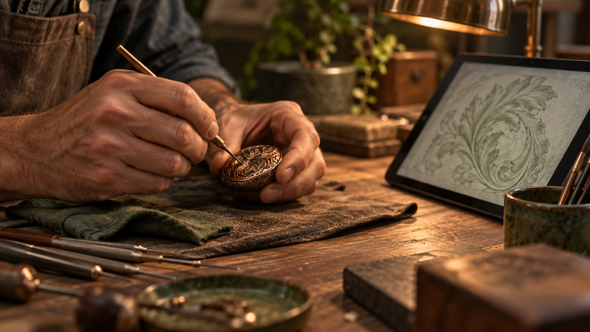
Он покажет, чего не хватало в вашем запросе: роли, контекста, формата. Так вы увидите формулу ещё до того, как я её дам в четверг.
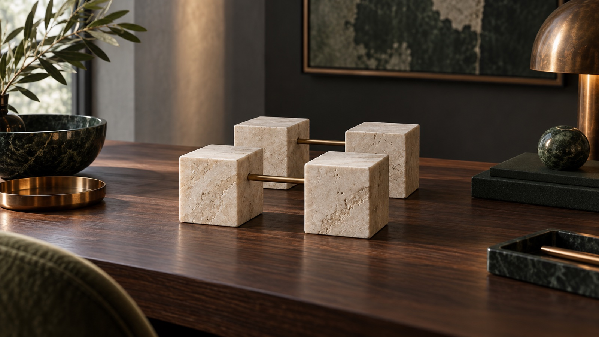
Что унесли сегодня
Чёрный ящик открыт
Семь принципов, которые переживут любую новую модель.
Список под свою роль
Двенадцать сценариев курса и десять своих, которые он предложил сам.
Думать вместе с ИИ
Третий класс навыков, надеть, а не лечь, рефлекс одного дня.
ChatGPT знает вас
Инструкция качества, досье в памяти, первая задача закрыта.
Вы открыли чёрный ящик. Осталось научиться с ним говорить
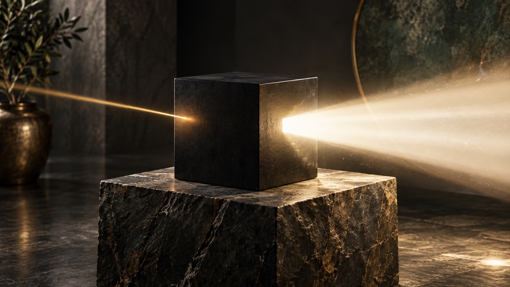
То, что вы ему говорите. Здесь решается всё: качество входа задаёт качество выхода.
Биг дата, датасет, веса, дрессировка. Мы разобрали, что там внутри.
То, что вы хотите получить. Точно, в нужном виде и с первого раза.
Практика до четверга: три захода по двадцать минут

Досье и инструкция стоят, проверено в новом чате. Одну из трёх задач довести до конца в том же чате.
Три рабочие задачи своими словами, одну наговорить голосом. Одну начать с «улучши мой запрос».
Разговор «куда уходит моя неделя»: таблица только я / команда / ИИ / не делать. Принести в четверг.
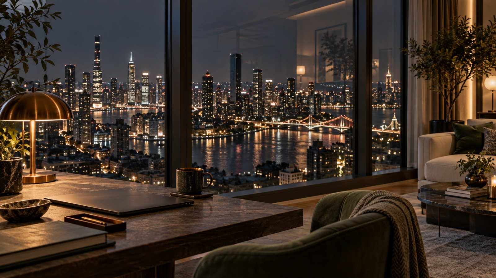
ИИ не сделает вашу работу за вас.
Он сделает её вместе с вами
Занятие 2 · четверг 24 сентября · 19:00 · промпт-инженерия